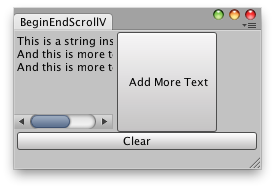

EditorGUILayout.BeginScrollView
public static Vector2 BeginScrollView(Vector2 scrollPosition,
bool alwaysShowHorizontal,
bool alwaysShowVertical,
params GUILayoutOption[] options);
public static Vector2 BeginScrollView(Vector2 scrollPosition,
GUIStyle horizontalScrollbar,
GUIStyle verticalScrollbar,
params GUILayoutOption[] options);
public static Vector2 BeginScrollView(Vector2 scrollPosition,
bool alwaysShowHorizontal,
bool alwaysShowVertical,
GUIStyle horizontalScrollbar,
GUIStyle verticalScrollbar,
GUIStyle background,
params GUILayoutOption[] options);
Parameters
| scrollPosition | The position to use display. | |
| alwayShowHorizontal | Optional parameter to always show the horizontal scrollbar. If false or left out, it is only shown when the content inside the ScrollView is wider than the scrollview itself. | |
| alwayShowVertical | Optional parameter to always show the vertical scrollbar. If false or left out, it is only shown when content inside the ScrollView is taller than the scrollview itself. | |
| horizontalScrollbar | Optional GUIStyle to use for the horizontal scrollbar. If left out, the horizontalScrollbar style from the current GUISkin is used. | |
| verticalScrollbar | Optional GUIStyle to use for the vertical scrollbar. If left out, the verticalScrollbar style from the current GUISkin is used. |
Returns
Vector2 The modified scrollPosition. Feed this back into the variable you pass in, as shown in the example.
Description 描述
Begin an automatically laid out scrollview.
These work just like GUILayout.BeginScrollView but feel more application-like and should be used in the editor

Label inside a scroll view.
using System.Collections; using System.Collections.Generic; using UnityEngine; using UnityEditor;
public class BeginScrollViewExample : EditorWindow { Vector2 scrollPos; string t = "This is a string inside a Scroll view!";
[MenuItem("Examples/Modify internal Quaternion")] static void Init() { BeginScrollViewExample window = (BeginScrollViewExample)EditorWindow.GetWindow(typeof(BeginScrollViewExample), true, "My Empty Window"); window.Show(); }
void OnGUI() { EditorGUILayout.BeginHorizontal(); scrollPos = EditorGUILayout.BeginScrollView(scrollPos, GUILayout.Width(100), GUILayout.Height(100)); GUILayout.Label(t); EditorGUILayout.EndScrollView(); if (GUILayout.Button("Add More Text", GUILayout.Width(100), GUILayout.Height(100))) t += " \nAnd this is more text!"; EditorGUILayout.EndHorizontal(); if (GUILayout.Button("Clear")) t = ""; } }